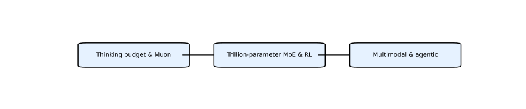

Kimi 系列由 Moonshot AI 推出，致力于面向代理能力 (Agentic Intelligence) 的开源大模型，强调通过合成数据和强化学习让模型学会感知、规划、行动和自我评估。该家族从 k1.5 到 K2 再到 K2.5/V 逐步增强能力。
关键节点包括 k1.5 的思考预算探索、Muon 优化器的可扩展性分析、K2 的万亿参数 MoE 与 MuonClip、K2.5 的多模态扩展以及 Kimi Linear 注意力架构。

优化器创新：Muon 优化器通过提升 token 使用效率减少损失波动；MuonClip 在此基础上加入 QK‑Clip，以裁剪权重比裁剪梯度更稳定。
数据合成：论文系统化地生成工具使用示例，涵盖任务生成、轨迹生成和质量评估，为 RL 提供丰富且高质量的训练数据。
强化学习策略：采用可验证奖励 (RLVR) 确保输出正确，并用自评奖励让模型学会自我批判；同时强调预算控制、温度衰减等技巧以提升 RL 收敛效率。
Agentic Intelligence：K2 将注意力从“对话”转向“自主代理”，在软件工程、工具使用和多步推理任务上表现强大，使模型不仅能回答问题，更能完成任务。
Kimi 的技术路线可以概括为三个阶段：
k1.5 探索增加思考步骤（thinking budget）并采用 Muon 优化器以提升 token 利用率，打下了大模型 RL 的基础。
K2 使用 1 万亿参数的 MoE 架构和 MuonClip/QK‑Clip 提升训练稳定性，通过 15.5 万亿 token 预训练和后续大规模 RL（RLVR 与自评奖励）让模型具备规划和执行能力。
K2.5 在 K2 的基础上融入视觉编码器，并强调任务分解、搜索和工具调用能力，使模型迈向多模态智能体。
下图展示了 Kimi 技术路线的三大阶段，采用英文标签便于快速识别各阶段特点：

下表列出各论文的 Markdown 分析（内含至少十对问答）以及对应的 HTML 页面。
| 名称 | Markdown 分析 | HTML 页面 |
|---|---|---|
| Kimi k1.5: Scaling RL with LLMs | kimi_k1_5.md | kimi_k1_5.html |
| Muon is Scalable for LLM Training | kimi_muon.md | kimi_muon.html |
| Kimi K2: Open Agentic Intelligence | kimi_k2.md | kimi_k2.html |
| Kimi K2.5 / K2.5V | kimi_k2_5.md | kimi_k2_5.html |
| Kimi Linear: Expressive & Efficient Attention | kimi_linear.md | kimi_linear.html |